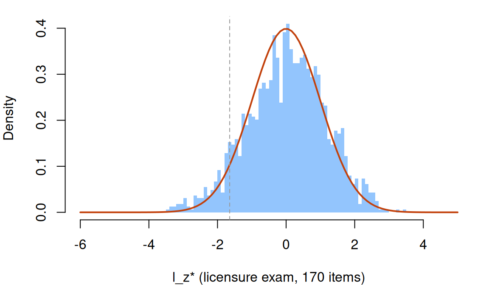

Person fit: does a respondent’s pattern fit the model?
What this is for
A licensure program suspects 46 of its 1,636 respondents of inappropriate behaviour. Their scores look like everyone else’s. Can the responses themselves say which patterns the model doesn’t describe? Every fit statistic so far has asked whether an item behaves as the model says, over all its respondents. Person fit asks it of one respondent, over all their items. This lesson builds the two families of person-fit statistics, group-based and IRT-based, shows that estimating \(\theta\) from the same responses changes what “unlikely” means, and then asks the licensure data, a personality inventory and a matrix reasoning test what a flag can and can’t tell us.
Goals
By the end of this lesson you should be able to:
- say what separates group-based person-fit statistics from IRT-based ones;
- count Guttman errors and compute \(G^*\) and \(H^T\) for a response pattern, with no model fitted;
- compute person outfit, infit and \(l_z\), and say which direction is underfit and which overfit;
- explain why \(l_z\), outfit and infit at an estimated \(\theta\) flag fewer respondents than their nominal rate, and compute Snijders’s \(l_z^*\) by hand;
- say how a statistic’s null distribution depends on the respondent’s score;
- say which kinds of aberrant responding a global index can find and which it can’t;
- read a person-fit flag as a reason to look at a pattern, and list what else could produce it.
Core ideas
Person-fit statistics come in two families (Meijer & Sijtsma, 2001). Group-based (nonparametric) statistics use only the data: an ordering of the items by how many respondents got each right and, for some, the other respondents’ patterns. They need no model and no \(\theta\), but have no reference distribution of their own. IRT-based statistics compare a pattern with the probabilities a model gives at the respondent’s \(\theta\). They need item parameters and, in practice, \(\hat\theta\); in return, the model says how the statistic is distributed if it holds.
Group-based statistics: Guttman errors and \(H^T\)
Order the items from easiest to hardest by the share of respondents who got each right. If responses were perfectly consistent, a respondent with \(r\) correct would get the \(r\) easiest right and the rest wrong: a Guttman pattern (Guttman, 1944). Every pair in which an easier item is wrong and a harder one right is a Guttman error. A respondent can make at most \(r(n - r)\) of them, so the normalized count \[G^* = \frac{\text{Guttman errors}}{r(n - r)}\] runs from 0 (a Guttman pattern) to 1 (the reverse). It needs no model, only an ordering of the items. Counts like these are a reasonable choice before any model has been chosen, or when there are too few respondents to fit one.
Try it: Guttman errors
Ten items, easiest first: the share of a population answering each correctly runs from 0.89 to 0.11. Choose which ones the respondent gets right.
The default pattern (items 1, 2, 4, 5 and 7) has 4 Guttman errors of a possible 25. Tick items 1 to 5 and the count is 0; tick 6 to 10 instead and it is 25, with the same sum score. Whether 4 is many for this score needs a reference: a model, or the other respondents.
\(G^*\) compares a pattern with an ordering of the items. \(H^T\) (Sijtsma, 1986; Sijtsma & Meijer, 1992) compares it with the other respondents’ patterns. It is Loevinger’s \(H\) for one respondent of the transposed data: the covariance, across items, between their responses and everyone else’s summed responses, over the largest it could be given everyone’s proportions correct. Write \(\pi_j = r_j/n\) for the share of items respondent \(j\) got right and \(\pi_{jk}\) for the share that both \(j\) and \(k\) got right. Then \[H^T_j = \frac{\sum_{k \ne j} (\pi_{jk} - \pi_j\pi_k)}{\sum_{k \ne j} \big[\min(\pi_j, \pi_k) - \pi_j\pi_k\big]}.\] Each term in the numerator is the covariance of two respondents’ responses across the items; the matching term below is the largest that covariance can be, reached when the one with the lower score got right only items the other also got right. \(H^T\) is 1 when no one with a lower score got right an item this respondent got wrong, and no one with a higher score got wrong an item they got right. Low or negative values signal misfit. In Karabatsos’s (2003) comparison of 36 statistics, \(H^T\) was among the best at detecting aberrant patterns. Sinharay (2017) reran those simulations, computing power in a way that treated the statistics alike; \(H^T\) still did well, about as well as \(l_z\) and U3 (see also Tendeiro & Meijer, 2014). Like \(G^*\), it depends on the sample.
IRT-based statistics: person outfit, infit and \(l_z\)
Average the same squared residuals over one respondent’s items instead of one item’s respondents and you have person outfit and person infit (Wright & Masters, 1982). A strong respondent who misses an easy item gets a large \(z^2\) from it, just as an item does from a strong respondent who misses it.
Outfit and infit are Rasch statistics. They were built for the Rasch model, and their usual reading, a mean square near 1 with fixed limits such as 0.7 to 1.3, comes from that tradition. The formulas take any model’s \(P_{ij}\), and mirt’s personfit() computes them for a 2PL too, as the widgets below do; but outside the Rasch model they are borrowed. Even under it, fixed limits have a catch: the spread of a mean square under the model depends on how many residuals it averages, so one pair of limits is too strict for a short test and too lax for a long one (Smith, Schumacker & Bush, 1998, for items and sample size).
The other route starts from that likelihood. Let \(l_0\) be the log likelihood of the pattern at \(\theta\), \[l_0 = \sum_i \big[x_i \log P_i + (1 - x_i)\log(1 - P_i)\big].\] If the model holds, \(l_0\) has a mean and variance we can write down, item by item: \[E(l_0) = \sum_i \big[P_i \log P_i + (1 - P_i)\log(1 - P_i)\big], \qquad \text{Var}(l_0) = \sum_i P_i(1 - P_i)\Big[\log\frac{P_i}{1 - P_i}\Big]^2.\] Standardizing gives \(l_z = \big(l_0 - E(l_0)\big)/\sqrt{\text{Var}(l_0)}\) (Levine & Rubin, 1979; Drasgow, Levine & Williams, 1985). Below 0 the pattern is less likely than the model expects (underfit); above 0 it is more predictable (overfit). mirt’s personfit() reports it as Zh (Chalmers, 2012). Since \(l_0 - E(l_0) = \sum_i (x_i - P_i)\log\frac{P_i}{1 - P_i}\), \(l_z\) is a weighted sum of residuals, and a correct answer on an item far above the respondent (small \(P_i\), a large negative weight) counts most against the pattern.
Try it: same score, different likelihoods
The pattern from the widget above, among every pattern with the same sum score. Each is scored by maximum likelihood, and \(l_z\) is computed at that estimate. Under the Rasch model every pattern with the same score has the same \(\hat\theta\); the 2PL gives the items slopes from 0.5 to 2.0.
Under the Rasch model the points fall close to a line: more Guttman errors, lower \(l_z\). They don’t fall exactly on it, because \(l_z\) weighs an error by how far apart the two items are, while \(G^*\) counts every error alike. Switch to the 2PL and the cloud spreads: an error on a steep item costs more. The Guttman pattern sits at the top, with \(l_z\) above 0: overfit, more orderly than the model expects.
Estimating \(\theta\) narrows the null distribution
\(l_z\) is standard normal (for long tests) only at the respondent’s true \(\theta\). In practice \(\hat\theta\) comes from the same responses, and a pattern looks at least as likely at its own maximum-likelihood estimate as at the truth. What does that do to the flag rate at −1.645, the 5% point of the standard normal?
Try it: \(l_z\) at the true \(\theta\) and at \(\hat\theta\)
2,000 simulated respondents answer 2PL items (slopes around 1, difficulties standard normal) whose parameters are known; only \(\theta\) is estimated, by maximum likelihood. Each line is the distribution of one version of the statistic; the dashed curve is the standard normal. Outfit and infit are standardized (see below), so that for them, too, 0 is the centre and the flag is at 1.645, on the right.
At the true \(\theta\) the SD is about 1, but short tests give a skewed distribution, and 6–7% fall below −1.645 with 10 to 40 items (Molenaar & Hoijtink, 1990). At the estimate the SD drops to about 0.8 and the flag rate to 2–4%, at every length: a longer test doesn’t remove the shrinkage (Nering, 1995). Snijders (2001) derived the null distribution of any statistic that is a weighted sum of residuals, with \(\hat\theta\) in place of \(\theta\), and from it the corrected \(l_z^*\), whose SD is about 1 at every length here. Magis, Raîche and Béland (2012) set it out step by step for the logistic models and the MLE and WLE.
The correction is short. At the ML estimate, the score equation has already set \(\sum_i a_i(x_i - P_i)\) to zero, so the part of each weight \(w_i = \log\frac{P_i}{1 - P_i}\) that lies along the slopes can’t vary any more. \(l_z^*\) removes it before standardizing: \[l_z^* = \frac{\sum_i (x_i - P_i)\,\tilde w_i}{\sqrt{\sum_i P_i(1 - P_i)\,\tilde w_i^2}}, \qquad \tilde w_i = w_i - c\,a_i, \quad c = \frac{\sum_i P_i(1 - P_i)\,a_i w_i}{\sum_i P_i(1 - P_i)\,a_i^2},\] all evaluated at \(\hat\theta\). For the MLE the numerator equals that of \(l_z\); only the denominator shrinks, to match. For the WLE, Snijders adds a term for the estimator’s own correction. The WLE is worth that term: it is less biased on average than the MLE, whose estimates are pushed outward, most on short tests (Warm, 1989).
Outfit and infit are weighted sums of residuals too: for a 0/1 response, \((x_i - P_i)^2 = P_i(1 - P_i) + (1 - 2P_i)(x_i - P_i)\), so \[\text{outfit} - 1 = \frac{1}{n}\sum_i (x_i - P_i)\frac{1 - 2P_i}{P_i(1 - P_i)}, \qquad \text{infit} - 1 = \frac{\sum_i (x_i - P_i)(1 - 2P_i)}{\sum_i P_i(1 - P_i)}.\] Standardized (positive for underfit), each shrinks at \(\hat\theta\) just as \(l_z\) does: switch the widget to outfit or infit. Magis, Béland and Raîche (2014) adapt Snijders’s correction to both under the Rasch model; the widget uses the same formula, with these weights for \(w_i\), under the 2PL. (Rasch software usually standardizes the mean squares with a cube-root transformation instead.)
What of those perfect patterns? They have no person-fit statistic either, whatever the estimator. There is only one pattern with a score of 0 or \(n\), so there is nothing for it to disagree with.
Person fit and the score
In the licensure data below, the rank correlation of \(l_z^*\) with the sum score is 0.04. Yet how a statistic behaves depends on where a respondent sits. Here is the widget’s sample split by \(\hat\theta\): the SD of each version of the statistic chosen above.
With 20 items, \(l_z\) at the estimate has SD 0.98 near the middle of the items and 0.4–0.5 beyond 1.5 on either side; \(l_z^*\) stays near 1 in every band. The part the estimate absorbs is nothing for a respondent among the items’ difficulties and grows with the distance from them (first Go deeper above), so one cutoff for \(l_z\) flags almost no one with an extreme score. With 10 or 20 items, corrected outfit stays narrow (SD about 0.6) below −1.5, where a single surprising answer dominates it.
Group-based statistics depend on the score too: a score near 0 or \(n\) leaves few patterns, \(\binom{n}{r}\), to tell apart. So does power: random answers from a respondent who would have scored low look much like their own. One answer is to judge a pattern only against others with the same score (second Go deeper below).
Power depends on the kind of aberrance
A global index sums over every item. What if only a few items are affected?
Try it: what the statistics can find
3,000 simulated respondents on 2PL items; about 10% of them respond aberrantly (for guessing, 10% of those below \(\theta = -0.5\)). Each statistic’s cutoff is set so that 5% of a clean simulated sample is flagged (low \(l_z^*\), high outfit, high \(G^*\), low \(H^T\)), the way PerFit sets cutoffs by simulation (Tendeiro, Meijer & Niessen, 2016).
With preknowledge of the 4 hardest of 20 items, \(l_z^*\) flags 72% of the aberrant respondents and \(H^T\) 61%; with 2 items, 43% and 29%. Random responding is found only about half the time with 20 items, by every statistic. A different trait on a few items is barely found at all, and guessing by low scorers not much more. \(l_z^*\) is usually a little ahead, with the true model and item parameters; the group-based statistics use neither. The kind of aberrance matters more than the choice among the four.
What can misfit mean?
A low \(l_z^*\) says that the model, with these item parameters, describes this pattern poorly. It doesn’t say why. The candidates include carelessness or inattention (Meade & Craig, 2012; Niessen, Meijer & Tendeiro, 2016); preknowledge or copying (Cizek & Wollack, 2016); guessing; answering a different question from the one the scale asks, as when a respondent describes an ideal self; a trait that organizes some people’s answers less than others’ (Reise & Waller, 1993); and item parameters that are wrong for this respondent, a statement about the model, which a mixture Rasch model (Rost, 1990) turns into a model of its own. Overfit is a finding too.
The model can also be wrong for everyone. Every IRT-based statistic assumes that the fitted model is the one that generated the responses. Fit a 2PL where there is guessing, or one dimension where there are two, and the flags change. Hong, Monroe and Falk (2020) found that the share flagged across all respondents can look about right while the rate at a given \(\theta\) is far above nominal, and that respondents with extreme \(\theta\) are affected most. A flag is then partly a statement about the model, which is why checking the model’s fit (Model fit and out-of-sample prediction) comes before reading person fit.
Simulate
The code below simulates 1,000 respondents on 20 2PL items, makes 5% of them aberrant, fits the 2PL with mirt, scores everyone by maximum likelihood, and computes \(l_z\) (checked against mirt’s Zh) and \(l_z^*\) by hand. The first run takes 20–30 seconds while R and mirt load; the fit then takes a few seconds.
Unlike the widgets, this estimates the item parameters too. With the seed as written and kind <- "random", \(l_z\) has SD 0.75 among clean respondents and flags 1.7% of them; \(l_z^*\) has SD 1.01 and flags 5.4%, and it finds 36% of the random responders (\(l_z\): 16%). With "preknowledge" \(l_z^*\) finds 78%; with "guessing", 12%. Try n_items <- 40, or share <- 0.2, where the item parameters are fitted partly to the aberrant respondents.
Download this code to run it in your own R session.
With real data
Every analysis below uses the same few functions: \(l_z\), \(l_z^*\) and corrected outfit by hand, \(G^*\), \(H^T\), and a wrapper that fits a 2PL with mirt, scores respondents by maximum likelihood and collects the statistics. Download the code; it ends by checking the hand-computed statistics against PerFit (Tendeiro, Meijer & Niessen, 2016).
Code
library(mirt)
options(digits = 7) # R's default, in case a .Rprofile changes it
# l_z and Snijders's l_z* for the 2PL, from a response matrix X, item slopes a
# and difficulties b, and each respondent's maximum-likelihood theta.
# l_0 - E(l_0) is the sum over items of (x - P) * w, with w = log(P / (1 - P)).
# l_z* replaces w by its residual after taking out the part along the slopes
# (the direction the ML score equation has already set to zero). Outfit - 1 is
# also a weighted sum of residuals, with w = (1 - 2P) / (P (1 - P)), since for 0/1
# responses (x - P)^2 = P (1 - P) + (1 - 2P) (x - P); zout and zout_star are its
# standardized and corrected versions (positive = underfit).
lz_stats <- function(X, a, b, theta) {
P <- plogis(sweep(outer(theta, b, "-"), 2, a, "*"))
Q <- 1 - P
A <- matrix(a, nrow(X), length(a), byrow = TRUE)
wsum <- function(w) {
cn <- rowSums(P * Q * w * A) / rowSums(P * Q * A^2)
wt <- w - cn * A
num <- rowSums((X - P) * w)
cbind(num / sqrt(rowSums(P * Q * w^2)), num / sqrt(rowSums(P * Q * wt^2)))
}
L <- wsum(log(P / Q)); O <- wsum((1 - 2 * P) / (P * Q))
data.frame(lz = L[, 1], lzstar = L[, 2], zout = O[, 1], zout_star = O[, 2])
}
# Normalized Guttman errors G*: order the items from easiest to hardest by
# proportion correct, count the pairs in which the easier item is wrong and the
# harder one right, and divide by the most there could be, r * (n - r).
gstar <- function(X) {
X <- X[, order(-colMeans(X))]
n <- ncol(X); r <- rowSums(X)
errors <- apply(X, 1, function(x) sum(x * c(0, head(cumsum(1 - x), -1))))
errors / (r * (n - r))
}
# Sijtsma's H^T: Loevinger's H with respondents in place of items. For each
# respondent, the covariance over items between their responses and everyone
# else's summed responses, over the most it could be given the respondents'
# proportions correct p: the sum over the others of min(p_n, p_m) - p_n p_m.
# For rows that are neither all 0 nor all 1.
ht <- function(X) {
p <- rowMeans(X)
others <- sweep(-X, 2, colSums(X), "+")
num <- rowMeans((X - p) * (others - rowMeans(others)))
ps <- sort(p)
below <- findInterval(p, ps, left.open = TRUE) # respondents with a lower p
sum_min <- c(0, cumsum(ps))[below + 1] + p * (length(p) - below - 1)
num / (sum_min - p * (sum(p) - p))
}
# Fit a 2PL, score every respondent with a sum score strictly between 0 and n by
# maximum likelihood, and compute every person-fit statistic in the lesson.
person_fit <- function(X) {
set.seed(1)
m <- mirt(X, 1, itemtype = "2PL", verbose = FALSE)
ip <- coef(m, simplify = TRUE, IRTpars = TRUE)$items
ok <- rowSums(X) > 0 & rowSums(X) < ncol(X)
th <- fscores(m, method = "ML", max_theta = 10)[, 1]
pf <- personfit(m, Theta = matrix(th)) # mirt's outfit, infit and Zh (= l_z)
s <- lz_stats(X[ok, ], ip[, "a"], ip[, "b"], th[ok])
list(model = m, ip = ip, ok = ok,
res = data.frame(r = rowSums(X)[ok], theta = th[ok], s,
outfit = pf$outfit[ok], infit = pf$infit[ok], zh = pf$Zh[ok],
G = gstar(X[ok, ]), Ht = ht(X[ok, ])))
}
share_below <- function(z) round(mean(z < -1.645), 3)A licensure exam
Our main example is credentialform_lnirt, one form of a licensure exam from the Handbook of Quantitative Methods for Detecting Cheating on Tests (Cizek & Wollack, 2016), distributed with the R package LNIRT. Its job: it is the one IRW table that marks respondents the vendor suspected of inappropriate behaviour (Flagged). A response is 1 when correct. We keep the 170 scored items; the pilot slots that follow them hold different items for different respondents.
Code
url <- "https://redivis.com/api/v1/tables/datapages.item_response_warehouse:v64_0.credentialform_lnirt/rows?format=csv"
cf <- read.csv(url)
# Items iraw.1-170 are the scored items. iraw.171-200 hold pilot items, and which
# pilot item sits under a name depends on the respondent's pilot set, so we keep
# the scored items only.
cf <- cf[cf$item %in% paste0("iraw.", 1:170), ]
X_cf <- xtabs(resp ~ id + item, cf)
X_cf <- unclass(X_cf)[, paste0("iraw.", 1:170)]
people_cf <- cf[!duplicated(cf$id), c("id", "Flagged", "Attempt", "Country")]
people_cf <- people_cf[match(rownames(X_cf), people_cf$id), ]
c(respondents = nrow(X_cf), items = ncol(X_cf), missing = sum(is.na(cf$resp)),
flagged = sum(people_cf$Flagged), perfect_or_zero = sum(rowSums(X_cf) %in% c(0, 170))) respondents items missing flagged perfect_or_zero
1636 170 0 46 0 Every respondent answered all 170 items, and no one scored 0 or 170.
Code
pf_cf <- person_fit(X_cf)
res_cf <- pf_cf$res
# l_z by hand matches mirt's Zh
all.equal(res_cf$lz, res_cf$zh)[1] TRUECode
round(c(sd_lz = sd(res_cf$lz), below_lz = share_below(res_cf$lz),
sd_lzstar = sd(res_cf$lzstar), below_lzstar = share_below(res_cf$lzstar),
above_lzstar = round(mean(res_cf$lzstar > 1.645), 3)), 3) sd_lz below_lz sd_lzstar below_lzstar above_lzstar
0.762 0.020 1.139 0.078 0.076 At the maximum-likelihood \(\hat\theta\), \(l_z\) has SD 0.76 and flags 2.0% below −1.645: the shrinkage from the widget, on 170 real items. \(l_z^*\) has SD 1.14 and flags 7.8%, with 7.6% above +1.645. Both tails hold more respondents than a standard normal would put there.
Code
op <- par(mar = c(4, 4, 1, 1))
hist(res_cf$lzstar, breaks = 50, col = "#93c5fd", border = NA, freq = FALSE,
main = "", xlab = "l_z* (licensure exam, 170 items)", xlim = c(-6, 5))
curve(dnorm(x), add = TRUE, lwd = 2, col = "#c2410c")
abline(v = -1.645, lty = 2, col = "#999")
Code
par(op)Code
round(cor(res_cf[, c("lzstar", "lz", "infit", "outfit", "zout_star", "G", "Ht", "r")],
method = "spearman")["lzstar", ], 2) lzstar lz infit outfit zout_star G Ht r
1.00 0.99 -0.96 -0.80 -0.86 -0.61 0.70 0.04 The IRT-based statistics largely agree: the rank correlation of \(l_z^*\) with \(l_z\) is 0.99, with person infit −0.96, and with outfit −0.80 (−0.86 once corrected). The group-based ones agree less: −0.61 with \(G^*\) and 0.70 with \(H^T\). With the sum score it is 0.04. Split by score, though:
Code
# The statistics by sum-score band (fifths of the respondents): the SD of l_z and
# l_z*, the share of each below -1.645, and the mean of G* and H^T.
band5 <- cut(res_cf$r, quantile(res_cf$r, 0:5 / 5), include.lowest = TRUE)
with(res_cf, data.frame(
n = as.vector(table(band5)),
sd_lz = round(tapply(lz, band5, sd), 2), sd_lzstar = round(tapply(lzstar, band5, sd), 2),
below_lz = round(tapply(lz < -1.645, band5, mean), 3),
below_lzstar = round(tapply(lzstar < -1.645, band5, mean), 3),
mean_G = round(tapply(G, band5, mean), 3), mean_Ht = round(tapply(Ht, band5, mean), 3)))| n | sd_lz | sd_lzstar | below_lz | below_lzstar | mean_G | mean_Ht | |
|---|---|---|---|---|---|---|---|
| [54,112] | 343 | 1.06 | 1.21 | 0.058 | 0.093 | 0.314 | 0.155 |
| (112,122] | 347 | 0.81 | 1.19 | 0.020 | 0.089 | 0.280 | 0.155 |
| (122,130] | 326 | 0.71 | 1.20 | 0.012 | 0.107 | 0.268 | 0.154 |
| (130,137] | 309 | 0.59 | 1.10 | 0.003 | 0.061 | 0.253 | 0.161 |
| (137,156] | 311 | 0.45 | 0.95 | 0.000 | 0.035 | 0.241 | 0.174 |
From the lowest fifth of scores to the highest, the SD of \(l_z\) falls from 1.06 to 0.45 and its flag rate from 5.8% to none: the top scorers are far above most items. \(l_z^*\) keeps an SD near 1. Mean \(G^*\) falls with the score (0.31 to 0.24); mean \(H^T\) barely moves (0.15 to 0.17).
Code
flag <- people_cf$Flagged[pf_cf$ok]
data.frame(flagged = c(0, 1), n = as.vector(table(flag)),
mean_score = round(tapply(res_cf$r, flag, mean), 1),
mean_lzstar = round(tapply(res_cf$lzstar, flag, mean), 2),
below = as.vector(tapply(res_cf$lzstar < -1.645, flag, sum)),
share_below = round(tapply(res_cf$lzstar < -1.645, flag, mean), 3))| flagged | n | mean_score | mean_lzstar | below | share_below | |
|---|---|---|---|---|---|---|
| 0 | 0 | 1590 | 123.4 | 0.01 | 124 | 0.078 |
| 1 | 1 | 46 | 119.9 | 0.39 | 4 | 0.087 |
The flagged respondents scored a little lower (119.9 against 123.4), and their patterns fit slightly better than the rest. A global index over 170 items has little power when few items are affected. The vendor’s list of compromised items isn’t in the IRW table, so a statistic on those items alone (problem 4) isn’t possible here.
What about the tail above +1.645?
Code
grp <- people_cf[pf_cf$ok, ]
grp$where <- ifelse(grp$Country %in% c("USA", "India", "Philippines"), grp$Country, "Other")
grp$attempt <- ifelse(grp$Attempt == "1", "first", "repeat")
summarize <- function(g) data.frame(
n = as.vector(table(g)), mean_score = round(tapply(res_cf$r, g, mean), 1),
mean_lzstar = round(tapply(res_cf$lzstar, g, mean), 2),
above_1.645 = round(tapply(res_cf$lzstar > 1.645, g, mean), 3),
below_1.645 = round(tapply(res_cf$lzstar < -1.645, g, mean), 3))
summarize(grp$where)| n | mean_score | mean_lzstar | above_1.645 | below_1.645 | |
|---|---|---|---|---|---|
| India | 161 | 109.5 | 0.50 | 0.199 | 0.031 |
| Other | 79 | 107.3 | -0.06 | 0.038 | 0.127 |
| Philippines | 153 | 106.2 | 0.61 | 0.190 | 0.033 |
| USA | 1243 | 128.2 | -0.11 | 0.048 | 0.087 |
Code
summarize(grp$attempt)| n | mean_score | mean_lzstar | above_1.645 | below_1.645 | |
|---|---|---|---|---|---|
| first | 1167 | 127.7 | -0.09 | 0.051 | 0.082 |
| repeat | 469 | 112.3 | 0.31 | 0.136 | 0.068 |
Code
# Is it only the lower scores? Within score bands:
band <- cut(res_cf$r, c(0, 110, 125, 170))
round(tapply(res_cf$lzstar > 1.645, list(band, usa = grp$where == "USA"), mean), 3) usa
FALSE TRUE
(0,110] 0.120 0.038
(110,125] 0.183 0.052
(125,170] 0.258 0.048About a fifth of the respondents educated in India (19.9%) or the Philippines (19.0%) have \(l_z^*\) above +1.645, against 4.8% of the 1,243 educated in the USA; repeat takers show the same, less strongly (13.6% against 5.1%). These groups score lower, but within each score band the gap remains (12–26% against about 5%). One possibility, which the patterns alone can’t settle, is that some items work differently in these groups, so that parameters from a calibration dominated by USA-educated respondents don’t describe them (problem 5).
A personality inventory
For contrast, psychtools_epi holds the Eysenck Personality Inventory (Eysenck & Eysenck, 1968, as distributed in the R package psychTools). Its job is to show misfit next to a measure of one possible cause: besides neuroticism and extraversion, the inventory has a Lie scale, nine items on which one answer describes an implausibly virtuous self. We analyse the 24 neuroticism items. In the IRW table 1 means “no” (the processing script subtracts 1 from psychTools’ 1 = yes, 2 = no); we reverse it once, so that 1 is yes, the neurotic answer for every item.
Code
url <- "https://redivis.com/api/v1/tables/datapages.item_response_warehouse:v64_0.psychtools_epi/rows?format=csv"
epi <- read.csv(url)
X_epi <- xtabs(resp ~ id + item, epi, addNA = TRUE, na.action = na.pass)
X_epi <- unclass(X_epi)
X_epi[unclass(xtabs(is.na(resp) ~ id + item, epi)) > 0] <- NA
# psychTools codes 1 = yes and 2 = no; the IRW table subtracts 1, so there 1 means
# "no". We turn it around once, here: from now on 1 = yes.
X_epi <- 1 - X_epi
# Scoring keys from psychTools (epi.keys). Every neuroticism item is keyed the same
# way; the Lie scale has three items keyed yes and six keyed no.
N_items <- paste0("V", c(2, 4, 7, 9, 11, 14, 16, 19, 21, 23, 26, 28, 31, 33, 35, 38,
40, 43, 45, 47, 50, 52, 55, 57))
L_yes <- paste0("V", c(6, 24, 36)); L_no <- paste0("V", c(12, 18, 30, 42, 48, 54))
lie <- rowSums(X_epi[, L_yes]) + rowSums(1 - X_epi[, L_no])
XN <- X_epi[, N_items]
complete <- rowSums(is.na(XN)) == 0 & !is.na(lie)
c(respondents = nrow(XN), complete = sum(complete), missing_responses = sum(is.na(epi$resp))) respondents complete missing_responses
3570 3232 4746 Code
XN <- XN[complete, ]; lie <- lie[complete]
table(score = cut(rowSums(XN), c(-1, 0, 23, 24), labels = c("0", "1-23", "24")))score
0 1-23 24
13 3216 3 Code
pf_epi <- person_fit(XN)
res_epi <- pf_epi$res
res_epi$lie <- lie[pf_epi$ok]
round(c(n = nrow(res_epi), sd_lz = sd(res_epi$lz), below_lz = share_below(res_epi$lz),
sd_lzstar = sd(res_epi$lzstar), below_lzstar = share_below(res_epi$lzstar)), 3) n sd_lz below_lz sd_lzstar below_lzstar
3216.000 1.022 0.065 1.190 0.088 Of the 3,232 respondents who answered every neuroticism and Lie item, 3,216 have a score strictly between 0 and 24. \(l_z^*\) flags 8.8% of them below −1.645, again more than 5%.
Code
lie_band <- cut(res_epi$lie, c(-1, 2, 4, 9), labels = c("Lie 0-2", "Lie 3-4", "Lie 5-9"))
data.frame(n = as.vector(table(lie_band)),
mean_N_score = round(tapply(res_epi$r, lie_band, mean), 1),
mean_lzstar = round(tapply(res_epi$lzstar, lie_band, mean), 2),
share_below = round(tapply(res_epi$lzstar < -1.645, lie_band, mean), 3))| n | mean_N_score | mean_lzstar | share_below | |
|---|---|---|---|---|
| Lie 0-2 | 1781 | 11.6 | 0.24 | 0.054 |
| Lie 3-4 | 1033 | 10.5 | 0.03 | 0.106 |
| Lie 5-9 | 402 | 9.7 | -0.40 | 0.192 |
Code
# The same gradient is not a score effect: the share flagged by neuroticism score band
score_band <- cut(res_epi$r, c(0, 6, 12, 18, 23))
round(tapply(res_epi$lzstar < -1.645, score_band, mean), 3) (0,6] (6,12] (12,18] (18,23]
0.049 0.089 0.105 0.102 Code
round(tapply(res_epi$lzstar < -1.645, list(score_band, lie_band), mean), 3) Lie 0-2 Lie 3-4 Lie 5-9
(0,6] 0.060 0.043 0.031
(6,12] 0.047 0.107 0.229
(12,18] 0.052 0.157 0.259
(18,23] 0.097 0.070 0.333The share flagged rises with the Lie score: 5.4% of respondents with Lie scores of 0–2, 10.6% at 3–4 and 19.2% at 5–9. It isn’t a score effect: in each neuroticism band above 6, respondents with Lie scores of 5–9 are flagged most often (23–33%, against 5–10% at Lie scores of 0–2). A respondent who presents an ideal self may deny some neuroticism items and not others, in an order that doesn’t follow the items’ difficulties: a different question answered on some of the items.
A matrix reasoning test
Our failure case is test_taking_much_2025_mr: 20 matrix reasoning items from the Open Matrices Item Bank (Koch, Spinath, Greiff & Becker, 2022), answered online by 1,244 respondents (Much, Mutak, Pohl & Ranger, 2025; data at https://doi.org/10.17605/OSF.IO/9J6HM). Its job is to show what person fit can’t see. A response is 1 when the respondent built the correct solution from a set of answer elements, which leaves little room for lucky guesses. The authors coded what respondents reported, at the end, about anything that affected them. The table has no listed processing script, and its rater column isn’t described at the source, so we leave it aside.
Code
url <- "https://redivis.com/api/v1/tables/datapages.item_response_warehouse_2:v25_0.test_taking_much_2025_mr/rows?format=csv"
mr <- read.csv(url)
# Y_MRm01 and Y_MRt01-t06 are the tutorial and training items; the 20 test items
# come in two blocks of ten (suffixes _01 and _02), one answered under an
# instruction to be accurate and one under an instruction to be fast.
mr <- mr[grepl("^Y_MR[0-9]", mr$item), ]
X_mr <- unclass(xtabs(resp ~ id + item, mr))
X_mr[unclass(xtabs(~ id + item, mr)) == 0] <- NA
people_mr <- mr[!duplicated(mr$id), c("id", "cov_ac", "cov_disruptions")]
people_mr <- people_mr[match(rownames(X_mr), people_mr$id), ]
complete <- rowSums(is.na(X_mr)) == 0
X_mr <- X_mr[complete, ]; people_mr <- people_mr[complete, ]
r_mr <- rowSums(X_mr)
c(respondents = nrow(X_mr), score_0 = sum(r_mr == 0), share_0 = round(mean(r_mr == 0), 3),
score_20 = sum(r_mr == 20))respondents score_0 share_0 score_20
1178.000 225.000 0.191 29.000 225 of the 1,178 respondents who have every item (19.1%) answered none correctly.
Code
# The study coded what respondents reported at the end into categories
# (cov_disruptions). Scores of 0 by category:
tab <- table(people_mr$cov_disruptions, zero = r_mr == 0)
tab[order(-tab[, "TRUE"]), ] zero
FALSE TRUE
no issues 727 134
partial lack of understanding the task 49 29
task difficulty 102 28
complete lack of understanding the task 9 20
mental discomfort 33 9
major technical issues 2 2
physical discomfort 10 2
minor distractions (external or other) 10 1
major disruption 4 0
minor technical issues 7 0Of the 29 who reported a complete lack of understanding of the task, 20 scored 0. None of the 225 has a person-fit statistic: a pattern of all zeros is the most likely pattern for a respondent at the bottom of the scale.
Code
pf_mr <- person_fit(X_mr)
res_mr <- pf_mr$res
res_mr$report <- people_mr$cov_disruptions[pf_mr$ok]
res_mr$checks <- people_mr$cov_ac[pf_mr$ok]
round(c(n = nrow(res_mr), sd_lzstar = sd(res_mr$lzstar),
below_lzstar = share_below(res_mr$lzstar)), 3) n sd_lzstar below_lzstar
924.000 1.091 0.067 Code
rep_group <- ifelse(res_mr$report == "no issues", "no issues",
ifelse(grepl("understanding", res_mr$report), "lack of understanding", "other issues"))
data.frame(n = as.vector(table(rep_group)),
mean_score = round(tapply(res_mr$r, rep_group, mean), 1),
mean_lzstar = round(tapply(res_mr$lzstar, rep_group, mean), 2),
share_below = round(tapply(res_mr$lzstar < -1.645, rep_group, mean), 3))| n | mean_score | mean_lzstar | share_below | |
|---|---|---|---|---|
| lack of understanding | 58 | 3.4 | 0.39 | 0.034 |
| no issues | 702 | 10.5 | 0.13 | 0.077 |
| other issues | 164 | 7.5 | 0.29 | 0.037 |
Code
data.frame(checks_passed = sort(unique(res_mr$checks)),
n = as.vector(table(res_mr$checks)),
mean_lzstar = round(tapply(res_mr$lzstar, res_mr$checks, mean), 2))| checks_passed | n | mean_lzstar |
|---|---|---|
| 1 | 4 | 0.35 |
| 2 | 69 | 0.16 |
| 3 | 851 | 0.18 |
Among the 924 respondents with a statistic, the 58 who reported not understanding the task, fully or partly, have a higher mean \(l_z^*\) (0.39) than those who reported no issues (0.13), and fewer are flagged (3.4% against 7.7%). Attention checks make little difference either. A respondent who hasn’t understood the task gets items wrong in a way that looks like low ability, and person fit, which asks only whether a pattern is consistent with some \(\theta\), finds nothing to flag.
So what should a program do with a person-fit statistic? Each option rests on assumptions. \(l_z^*\) assumes the item parameters are right for everyone and corrects for \(\theta\) being estimated from the same responses; \(G^*\) and \(H^T\) assume only an ordering of the items and the other respondents’ patterns, but they have no reference distribution without a model or a simulation, and a value means something only within its sample. Neither sees disengagement that looks like low ability, or a problem confined to a few items. In the case that the question is whether a respondent’s pattern is consistent with the model, \(l_z^*\) at a maximum-likelihood or WLE \(\hat\theta\), read alongside a group-based statistic such as \(H^T\), may be sufficient for some purposes as a first screen. A flag is a reason to look at the pattern, not a finding about the respondent.
Problems
- Derivation. Show that \(E(l_0)\) and \(\text{Var}(l_0)\) at a known \(\theta\) are as given in the core ideas, and that \(l_0 - E(l_0) = \sum_i (x_i - P_i)\log\frac{P_i}{1 - P_i}\). Then, following the Go deeper callout, show that for the Rasch model at the ML \(\hat\theta\) the variance lost is \((\hat\theta - \bar b)^2 I(\hat\theta)\). Whose \(l_z\) is least affected?
- Real data with a twist. Repeat the EPI analysis on the extraversion scale, whose items are keyed in both directions (psychTools
epi.keys), remembering that the IRW table codes 1 as “no”. Does the Lie gradient hold? What happens to \(l_z^*\) if you forget to reverse the negatively keyed items? - Judgment. A licensure program proposes to review everyone with \(l_z^* < -1.645\): 7.8% of 1,636, about 128 people. What should a review look for, what would a flag not justify, and what would you tell a respondent who asks why they were reviewed?
- Design. Suppose preknowledge of 20 of the 170 licensure items. Why is a global index weak? Design a statistic on a suspected subset (for example, performance on the subset given a \(\hat\theta\) from the other items), and simulate its power against \(l_z^*\) (Cizek & Wollack, 2016).
- Real data: the overfit tail. In
credentialform_lnirt, fit the 2PL separately to the USA-educated respondents and to the rest, and recompute \(l_z^*\) in each group with its own item parameters. Does the tail above +1.645 shrink? What else could make patterns more predictable than the model expects? - Challenge (open): across the IRW. Across many IRW tables, how often does \(l_z^*\) fall below −1.645 more often than 5%, and is the excess about respondents or about the model? What would tell the two apart? (I don’t know the answer. One start: compare the excess under a 2PL, a 3PL and a two-class mixture.)
Going further
- Snijders, T. A. B. (2001). Asymptotic null distribution of person fit statistics with estimated person parameter. Psychometrika, 66(3), 331–342. https://doi.org/10.1007/BF02294437. Where \(l_z^*\) comes from, for any statistic linear in the responses.
- Magis, D., Raîche, G., & Béland, S. (2012). A didactic presentation of Snijders’s \(l_z^*\) index of person fit with emphasis on response model selection and ability estimation. Journal of Educational and Behavioral Statistics, 37(1), 57–81. https://doi.org/10.3102/1076998610396894. \(l_z^*\) step by step, for each logistic model and estimator.
- Magis, D., Béland, S., & Raîche, G. (2014). Snijders’s correction of infit and outfit indexes with estimated ability level: An analysis with the Rasch model. Journal of Applied Measurement, 15(1), 82–93. https://pubmed.ncbi.nlm.nih.gov/24518583/. The same correction for person infit and outfit.
- Meijer, R. R., & Sijtsma, K. (2001). Methodology review: Evaluating person fit. Applied Psychological Measurement, 25(2), 107–135. https://doi.org/10.1177/01466210122031957. A review of person-fit methods, parametric and nonparametric.
- Tendeiro, J. N., Meijer, R. R., & Niessen, A. S. M. (2016). PerFit: An R package for person-fit analysis in IRT. Journal of Statistical Software, 74(5). https://doi.org/10.18637/jss.v074.i05. The package: \(l_z\), \(l_z^*\), \(G^*\), U3, polytomous versions, and cutoffs by simulation.
- Meijer, R. R., Niessen, A. S. M., & Tendeiro, J. N. (2016). A practical guide to check the consistency of item response patterns in clinical research through person-fit statistics. Assessment, 23(1), 52–62. https://doi.org/10.1177/1073191115577800. Person fit in practice, for clinical scales.
- Levine, M. V., & Rubin, D. B. (1979). Measuring the appropriateness of multiple-choice test scores. Journal of Educational Statistics, 4(4), 269–290. https://doi.org/10.3102/10769986004004269. The likelihood of a pattern as a measure of fit.
- Drasgow, F., Levine, M. V., & Williams, E. A. (1985). Appropriateness measurement with polychotomous item response models and standardized indices. British Journal of Mathematical and Statistical Psychology, 38(1), 67–86. https://doi.org/10.1111/j.2044-8317.1985.tb00817.x. The standardized \(l_z\).
- Molenaar, I. W., & Hoijtink, H. (1990). The many null distributions of person fit indices. Psychometrika, 55(1), 75–106. https://doi.org/10.1007/bf02294745. Why the null depends on ability, and the case for conditioning on the total score.
- Nering, M. L. (1995). The distribution of person fit using true and estimated person parameters. Applied Psychological Measurement, 19(2), 121–129. https://doi.org/10.1177/014662169501900201. \(l_z\) at the true and the estimated \(\theta\).
- Karabatsos, G. (2003). Comparing the aberrant response detection performance of thirty-six person-fit statistics. Applied Measurement in Education, 16(4), 277–298. https://doi.org/10.1207/S15324818AME1604_2. Power across statistics and kinds of aberrance.
- Sinharay, S. (2017). Are the nonparametric person-fit statistics more powerful than their parametric counterparts? Revisiting the simulations in Karabatsos (2003). Applied Measurement in Education, 30(4), 314–328. https://doi.org/10.1080/08957347.2017.1353990. Karabatsos’s comparison rerun, with power computed alike for every statistic.
- Hong, S. E., Monroe, S., & Falk, C. F. (2020). Performance of person-fit statistics under model misspecification. Journal of Educational Measurement, 57(3), 423–442. https://doi.org/10.1111/jedm.12207. What a wrong model does to flag rates, at each \(\theta\).
- Meijer, R. R. (1994). The number of Guttman errors as a simple and powerful person-fit statistic. Applied Psychological Measurement, 18(4), 311–314. https://doi.org/10.1177/014662169401800402. The count of Guttman errors against U3.
- Sijtsma, K. (1986). A coefficient of deviance of response patterns. Kwantitatieve Methoden, 7, 131–145. The person-fit \(H^T\).
- Sijtsma, K., & Meijer, R. R. (1992). A method for investigating the intersection of item response functions in Mokken’s nonparametric IRT model. Applied Psychological Measurement, 16(2), 149–157. https://doi.org/10.1177/014662169201600204. \(H\) on the transposed data matrix.
- Tendeiro, J. N., & Meijer, R. R. (2014). Detection of invalid test scores: The usefulness of simple nonparametric statistics. Journal of Educational Measurement, 51(3), 239–259. https://doi.org/10.1111/jedm.12046. The group-based statistics compared, with guidelines.
- van der Flier, H. (1982). Deviant response patterns and comparability of test scores. Journal of Cross-Cultural Psychology, 13(3), 267–298. https://doi.org/10.1177/0022002182013003001. The U3 statistic.
- Harnisch, D. L., & Linn, R. L. (1981). Analysis of item response patterns: Questionable test data and dissimilar curriculum practices. Journal of Educational Measurement, 18(3), 133–146. https://doi.org/10.1111/j.1745-3984.1981.tb00848.x. Pattern indices applied to schools.
- Guttman, L. (1944). A basis for scaling qualitative data. American Sociological Review, 9(2), 139–150. https://doi.org/10.2307/2086306. The perfectly consistent pattern.
- Glas, C. A. W., & Khalid, M. N. (2018). Person fit. In W. J. van der Linden (Ed.), Handbook of item response theory: Vol. 3. Applications (ch. 6). Chapman and Hall/CRC. https://doi.org/10.1201/9781315117430. A handbook chapter on person fit (the volume’s DOI).
- Glas, C. A. W., & Meijer, R. R. (2003). A Bayesian approach to person fit analysis in item response theory models. Applied Psychological Measurement, 27(3), 217–233. https://doi.org/10.1177/0146621603027003003. Person fit by posterior predictive checks.
- Emons, W. H. M. (2008). Nonparametric person-fit analysis of polytomous item scores. Applied Psychological Measurement, 32(3), 224–247. https://doi.org/10.1177/0146621607302479. Guttman errors for polytomous items.
- Sinharay, S. (2016). Asymptotically correct standardization of person-fit statistics beyond dichotomous items. Psychometrika, 81(4), 992–1013. https://doi.org/10.1007/s11336-015-9465-x. \(l_z^*\) for polytomous and mixed-format tests.
- van der Linden, W. J., & Guo, F. (2008). Bayesian procedures for identifying aberrant response-time patterns in adaptive testing. Psychometrika, 73(3), 365–384. https://doi.org/10.1007/s11336-007-9046-8. Person fit for response times.
- Reise, S. P., & Waller, N. G. (1993). Traitedness and the assessment of response pattern scalability. Journal of Personality and Social Psychology, 65(1), 143–151. https://doi.org/10.1037/0022-3514.65.1.143. Person fit on personality scales.
- Meade, A. W., & Craig, S. B. (2012). Identifying careless responses in survey data. Psychological Methods, 17(3), 437–455. https://doi.org/10.1037/a0028085. Screens for careless responding.
- Niessen, A. S. M., Meijer, R. R., & Tendeiro, J. N. (2016). Detecting careless respondents in web-based questionnaires: Which method to use? Journal of Research in Personality, 63, 1–11. https://doi.org/10.1016/j.jrp.2016.04.010. Person fit alongside other screens.
- Rost, J. (1990). Rasch models in latent classes: An integration of two approaches to item analysis. Applied Psychological Measurement, 14(3), 271–282. https://doi.org/10.1177/014662169001400305. The mixture Rasch model.
- Cizek, G. J., & Wollack, J. A. (Eds.). (2016). Handbook of quantitative methods for detecting cheating on tests. Routledge. https://doi.org/10.4324/9781315743097. Methods for preknowledge, copying and other kinds of cheating; the source of the licensure data.
- Much, S., Mutak, A., Pohl, S., & Ranger, J. (2025). Data from a validation study of two psychometric models on test-taking behavior. Journal of Open Psychology Data, 13. https://doi.org/10.5334/jopd.124. The matrix reasoning study.
- Koch, M., Spinath, F. M., Greiff, S., & Becker, N. (2022). Development and validation of the Open Matrices Item Bank. Journal of Intelligence, 10(3), 41. https://doi.org/10.3390/jintelligence10030041. The source of the matrix items.
- Warm, T. A. (1989). Weighted likelihood estimation of ability in item response theory. Psychometrika, 54(3), 427–450. https://doi.org/10.1007/bf02294627. The WLE.
- Chalmers, R. P. (2012). mirt: A multidimensional item response theory package for the R environment. Journal of Statistical Software, 48(6). https://doi.org/10.18637/jss.v048.i06.
personfit()gives person outfit, infit and \(l_z\). - Wright, B. D., & Masters, G. N. (1982). Rating scale analysis. MESA Press. https://www.rasch.org/rsa.htm. Infit and outfit, for items and persons.
- Smith, R. M., Schumacker, R. E., & Bush, M. J. (1998). Using item mean squares to evaluate fit to the Rasch model. Journal of Outcome Measurement, 2(1), 66–78. https://pubmed.ncbi.nlm.nih.gov/9661732/. Why fixed limits for infit and outfit mean squares mislead.
Data sources
Data from the Item Response Warehouse (each table name links to its IRW page); references from IRW biblio.
credentialform_lnirt: Cizek, G. J., & Wollack, J. A. (Eds.). (2016). Handbook of quantitative methods for detecting cheating on tests. Abingdon, England: Routledge. https://cran.r-project.org/web/packages/LNIRT/index.html. Licence: GPL-3.0.psychtools_epi: Eysenck, H.J. and Eysenck, S. B.G. (1968). Manual for the Eysenck Personality Inventory.Educational and Industrial Testing Service, San Diego, CA. https://cran.r-project.org/web/packages/psychTools/index.html. Licence: GPL-3.0.test_taking_much_2025_mr: Much, S., Mutak, A., Pohl, S., & Ranger, J. (2025, May 7). Modeling speed-ability trade-off and test-taking persistence - Parameter validation for two psychometric models. https://doi.org/10.17605/OSF.IO/9J6HM. Licence: CC BY 4.0.
For instructors
- Source: new to the course; not in EDUC 252. The scope follows Glas and Khalid’s handbook chapter (Vol. 3, ch. 6), with the null-distribution argument from Snijders (2001) and Magis, Raîche and Béland (2012).
- Timing: the core ideas and widgets take about 60 minutes; the real-data section works as a 30-minute lab (the licensure fit takes under a minute in local R).
- Code: the page computes \(l_z\) and \(l_z^*\) by hand, in the browser and in the downloadable code, because PerFit’s dependencies are heavy for webR. The downloadable
person-fit-irw.Rends with a PerFit check of the licensure statistics (\(l_z^*\), \(G^*\), \(H^T\)). - Held back: screening for careless responding with person fit alongside other screens; inattentive respondents as a latent class (Mixture models); person fit for polytomous items and Bayesian person fit (Going further); response-time person fit (van der Linden & Guo, 2008).
- Solutions: held back in
solutions/person-fit.qmd(not published).